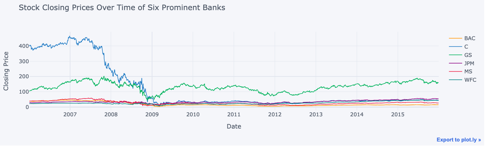

The primary aim of this project is to thoroughly investigate the stock performance of six prominent banks—Bank of America, Citigroup, Goldman Sachs, JPMorgan Chase, Morgan Stanley, and Wells Fargo—over a decade. By examining daily returns, performing exploratory data analysis, and utilizing various visualization techniques, the project seeks to uncover insights into the volatility, performance trends, and correlations between the stocks. Additionally, the project aims to highlight the impact of significant financial events on these banks' stock performance during the specified period.

The primary aim of this project is to develop a K-Nearest Neighbors (KNN) classification model to accurately predict the target class of customers based on their feature data. This project involves data preprocessing, feature scaling, exploratory data analysis (EDA), and model training. The goal is to determine the optimal number of neighbors (K) for the KNN algorithm and to evaluate the model's performance using classification metrics.

The primary aim of this project is to apply K-Means clustering to classify universities into different clusters based on features such as room and board costs, graduation rate, number of undergraduates, and out-of-state tuition. This project involves preprocessing the data, performing exploratory data analysis (EDA), and applying the K-Means clustering algorithm to identify distinct groups among the universities. The project also aims to evaluate the clustering performance by comparing the predicted clusters with the actual classification of universities as public or private institutions.
The primary aim of this project is to develop a linear regression model to predict the yearly amount spent by customers of an e-commerce website. By analyzing various features such as average session length, time on app, time on website, and length of membership, the project seeks to understand the factors that significantly influence customer spending. This involves data preprocessing, exploratory data analysis (EDA), feature selection, model training, and evaluation of the model's performance.
The primary aim of this project is to develop a machine learning model that can accurately predict the sentiment of Yelp reviews. By analyzing the text of reviews and employing various natural language processing (NLP) techniques, the project seeks to differentiate between positive and negative reviews. The process involves data preprocessing, exploratory data analysis (EDA), feature extraction using text vectorization, and building a classification model using the Naive Bayes algorithm.
The primary aim of this project is to build a predictive model to determine whether a loan will be fully repaid or charged off, using a dataset from Lending Club. The project involves extensive data preprocessing, exploratory data analysis (EDA), feature engineering, and the application of a neural network for classification. By analyzing various features and their correlations with the loan repayment status, the project seeks to create a robust predictive model that can help in assessing the risk associated with loans.
The primary aim of this project is to analyze a comprehensive dataset of movies released between 1980 and 2022 to determine the key factors influencing a movie's gross earnings. By examining the correlations between various features such as budget, gross earnings, and company, the project seeks to uncover significant relationships and trends that can predict a movie's success. This analysis involves data cleaning, exploratory data analysis (EDA), and the application of Pearson’s correlation statistical analysis.